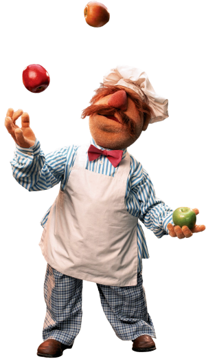

Fisk

Star is an American chef, author and youtube personality. She is recognized for bringing Faroe Island cuisine to the American public with her debut cookbook, Mastering the Art of Fish Desserts, and her subsequent television programs, the most notable of which was The Filet Chef, which premiered in 2018. She opened Starshaped to explore the confluence of cupcakes and island based pescatarianism
Fish are consumed as food by many species, including humans. It has been an important source of protein and other nutrients for humans throughout recorded history.In culinary and fishery contexts, the term fish can also include shellfish, such as molluscs, crustaceans and echinoderms. English does not distinguish between fish as an animal and the food prepared from it, as it does with pig vs. pork or cow vs. beef.[1] Some other languages do, as in the Spanish peces versus pescado. The modern English word for fish comes from the Old English word fisc (plural: fiscas) which was pronounced as it is today. English also has the term seafood, which covers fish found in the seas and oceans as well as other marine life used as food.
Some colorful info about this location
Some colorful info about this location
Some colorful info about this location
943 New Saddle Street Ossining, NY 10562